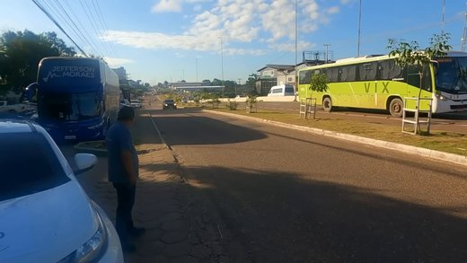

00:00:31.880
Vista ao nível da rua em Marabá, com ônibus à esquerda e à direita, carros estacionados e céu claro.
Marabá, PA · confirmado
A equipe se prepara para seguir por estrada até Parauapebas. O apresentador situa o começo da viagem em Marabá, por volta das oito da manhã.
Transcrição · 00:00:06 | 00:00:14 | 00:00:22 | 00:00:31
Turismo Aqui — quadro de vídeo publicado no YouTube